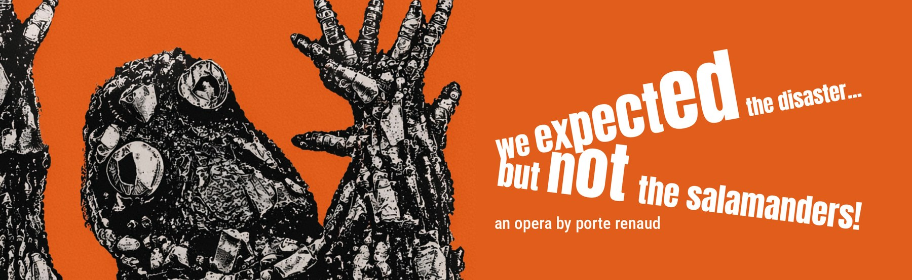
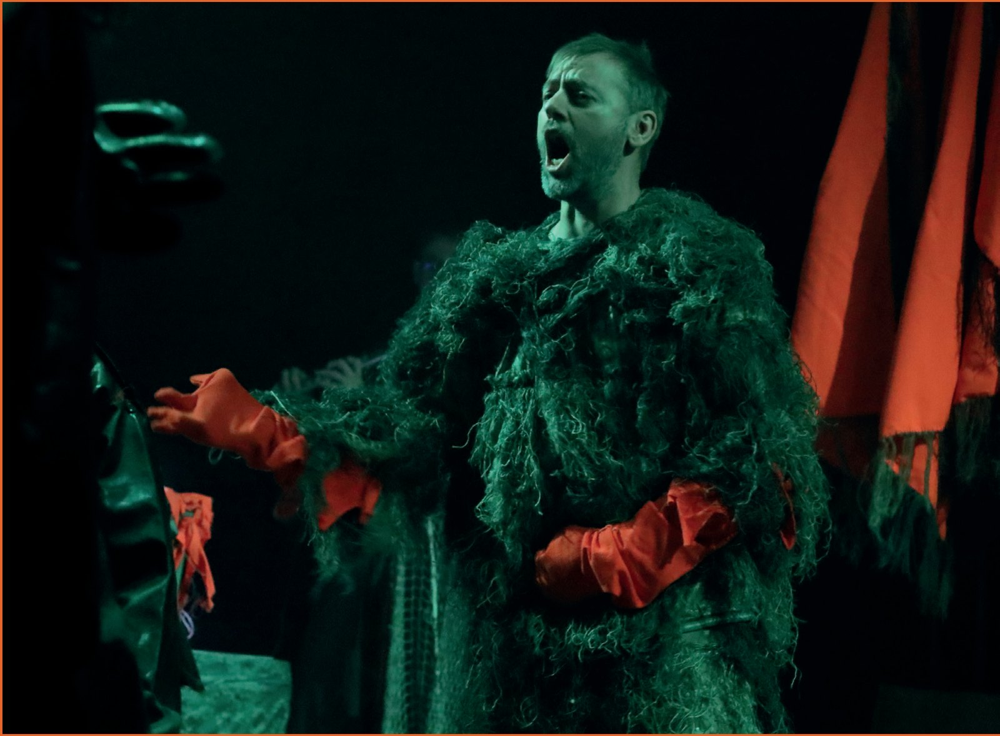
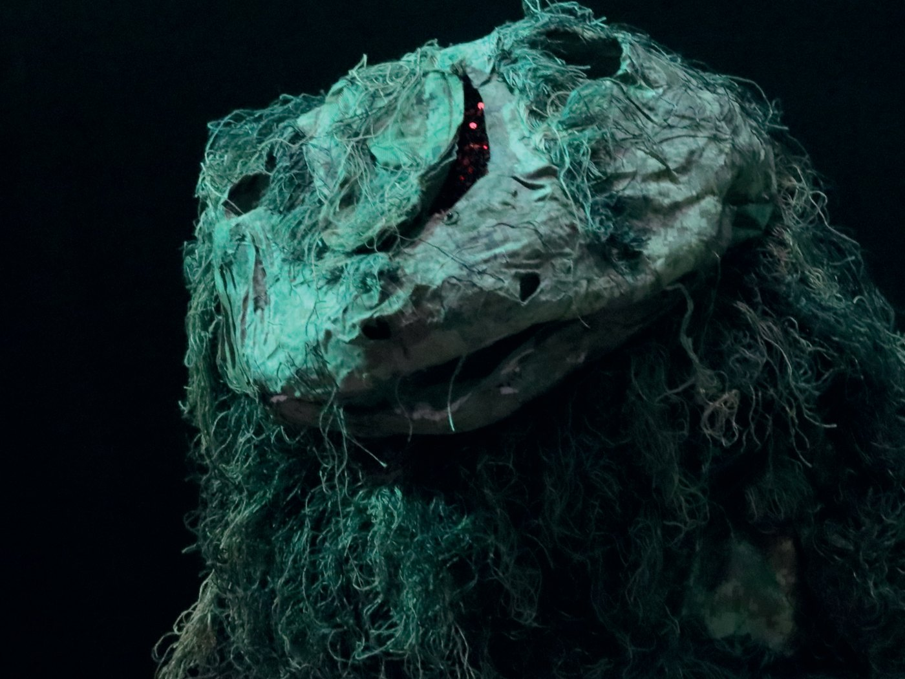
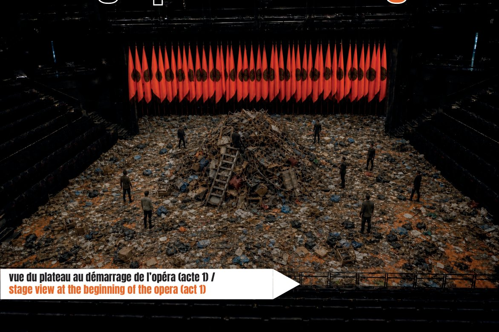
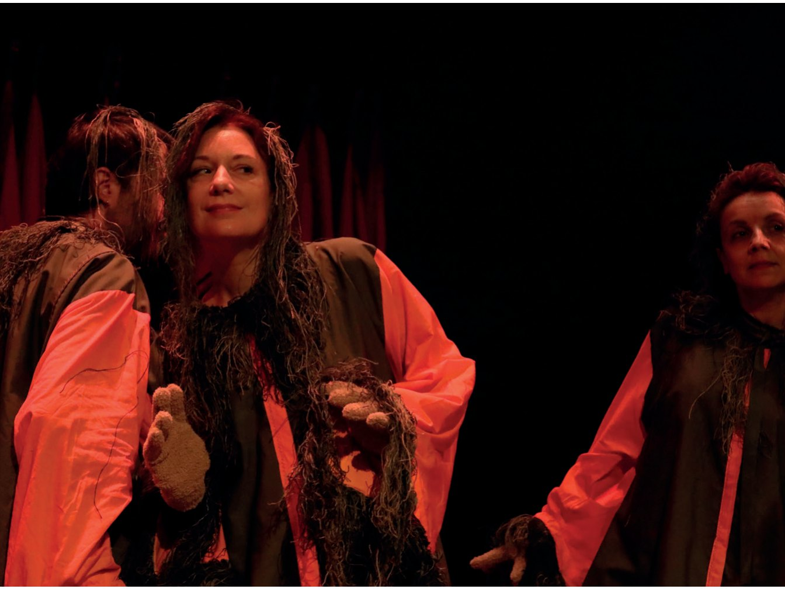
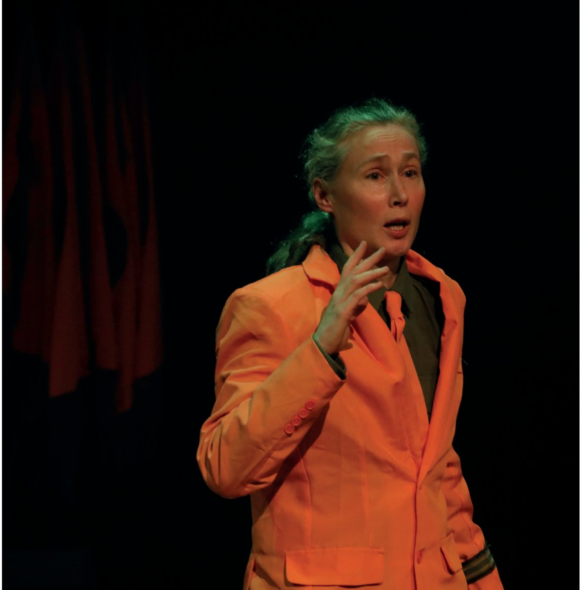

← Productions · Accompagnement STOPERA · Création 2027
We Expected the Disaster… but not the salamanders!


Opéra politique et écologique de - porte renaud -, d'après La Guerre des salamandres de Karel Čapek : une humanité productiviste exploite des salamandres bâtisseuses, qui finissent par se soulever. Extractivisme, crise écologique et luttes de classes se répondent dans une fable pour notre présent. Trois actes, 2h25, onze voix et trois musiciens. Porté par la Cie Trilobite, le projet est accompagné par STOPERA! dans une première phase de développement, en amont de sa création au festival Tête à Tête (Londres) en 2027.
Au cœur du projet, un travail de terrain avec les populations. Docteur en philosophie engagé dans l'éducation populaire, - porte renaud - mène de 2021 à 2026 une recherche-action dans le quartier Briand, à Mulhouse : des centaines d'heures d'ateliers, d'animation, d'échanges et de répétitions, pour former une véritable « communauté esthétique » (thèse 2025, lecture située de John Dewey). Les interprètes n'y forment pas un chœur au sens traditionnel — ils et elles incarnent cette communauté. La scénographie prolonge la démarche : les matériaux sont collectés sur place, avec les habitant·es et les associations locales, à chaque lieu d'accueil — réemploi écologique et ancrage territorial concret.
Production
Opéra politique & écologique de - porte renaud - (Cie Trilobite).
Transmission ↗
Le projet naît d'un travail avec les populations : une recherche-action en éducation populaire (quartier Briand, Mulhouse, 2021–2026), des centaines d'heures d'ateliers et de répétitions pour former une « communauté esthétique ».
Partenariats & territoire
Ancrage local fort : matériaux collectés sur place avec les habitant·es et les associations, à chaque lieu d'accueil — écologie du réemploi et localisme.




Informations
- GenreOpéra politique & écologique
- D'aprèsLa Guerre des salamandres — Karel Čapek
- Format3 actes · 2h25 · 11 voix + 3 musiciens
- CompagnieCie Trilobite — - porte renaud -
- CréationFestival Tête à Tête (Londres), 2027
- Rôle de STOPERA!Accompagnement & développement
Générique
- Musique, texte & mise en scène — - porte renaud -
- Piano & direction musicale — Rebeca Omordia
- Dramaturgie — Jean Haderer
- Violoncelle — Sylvain Bolz
- Flûte — Camille Moisson-Bonnevie
- Performeur·ses vocaux·ales — Laurent Deleuil, Stéphanie Boré, Valeria Altavar, Ariane-Olympe Girard, Florence Gelas
- Costumes — Evelyne Moisson-Bonnevie
Production & diffusion
Créé au sein de la Cie Trilobite, We Expected the Disaster… est programmé en création mondiale au festival Tête à Tête (Londres) en 2027. STOPERA! en accompagne une première phase de développement : structuration financière et budget de production, casting des postes techniques, communication et mise en réseau, en vue de la diffusion en France, en Europe et en Amérique latine.
En lien
À voir & écouter
Projet externe accompagné par STOPERA! (première phase de développement, 2026). Création mondiale au festival Tête à Tête (Londres), 2027. Compagnie soutenue historiquement par la DRAC Grand Est ; œuvre éditée chez Lacroch' (catalogue Semifuza). Photos du spectacle : Claire Shovelton ; modélisation du plateau : IA et photomontage.